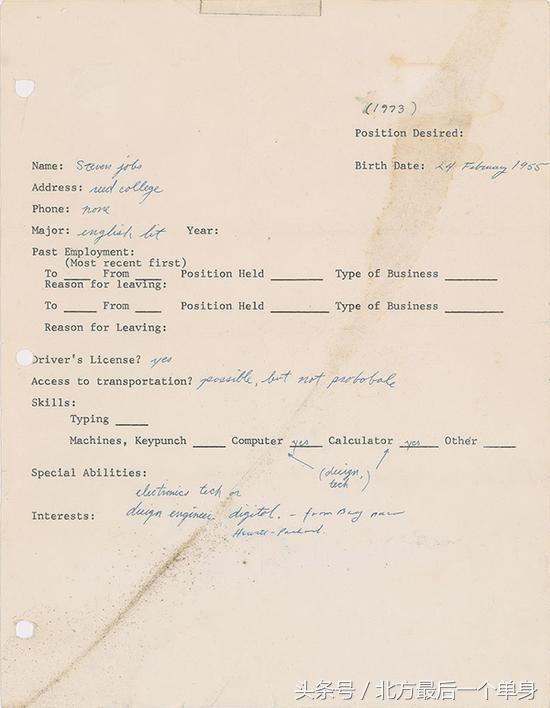
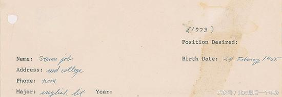
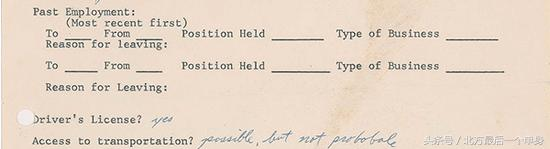
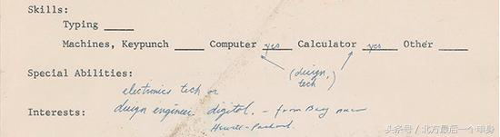
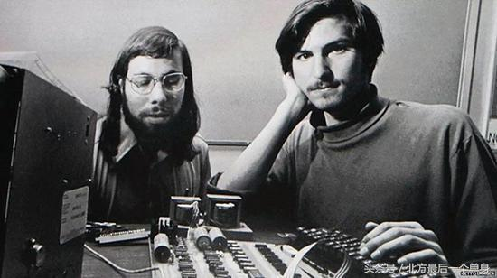
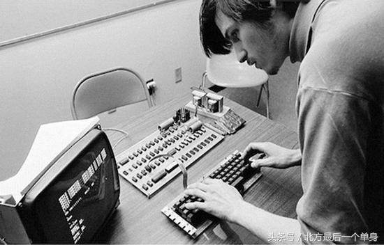
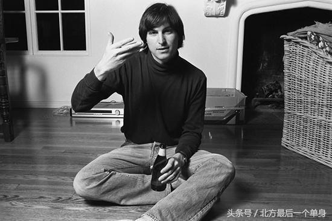
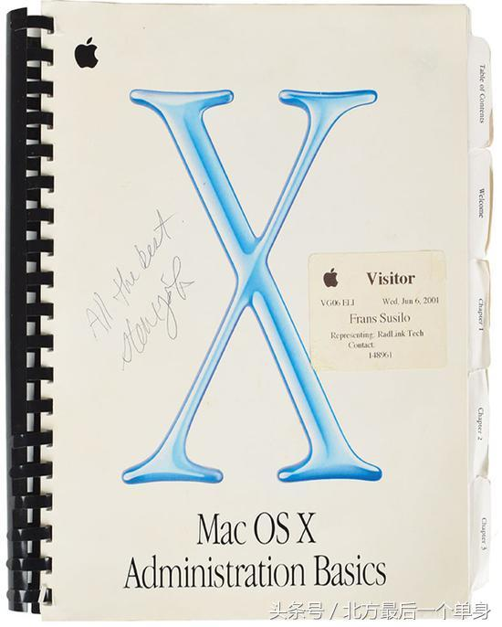
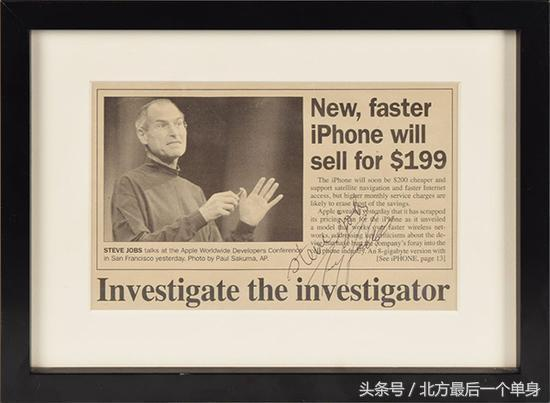
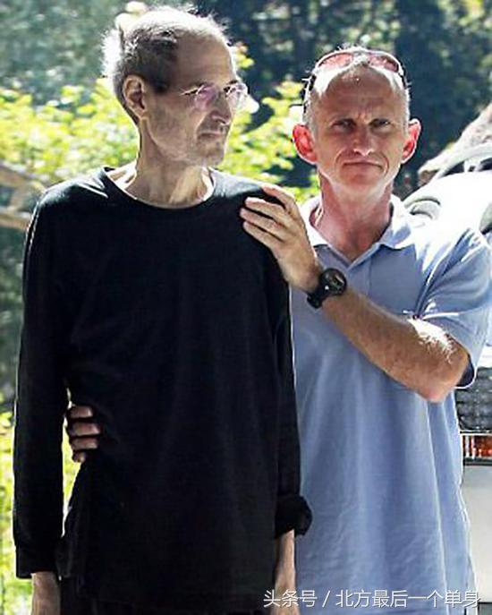

看乔布斯18岁求职信 才明白只有他能创造苹果
北方最后一个单身 2018-07-30 10:14:59
乔布斯在1973年的求职信在美国波士顿RR Auction拍卖行了拍卖。1973年，乔布斯刚刚18岁，这个在全球范围内带动一场电子科技革命、推出多种经典机型、却又不幸英年早逝的苹果创始人，在求职信上都写了些什么呢？

对事业不掺一丝杂念的偏执
这是乔布斯的求职信的全貌，由本人亲笔撰写，大小为8.5 X 11英寸，略小于A4纸。我们看到因为时间久远，求职信上有一条比较明显的折痕，稍微有点染色，顶部有一条清晰的胶带，侧面有打孔机的痕迹，但是保存状况还是很好的，没有任何破损。

在姓名这一栏，乔布斯写的是Steven Jobs，而不是我们现在熟知的Steve Jobs。
他填的地址是里德学院（Reed College），专业是英国文学（English Lit）。里德学院专注学术，博士毕业比例占据全美第三，这所学校是美国第一所拒绝U.S.News大学排名的学校，以个性、奇才而闻名，不仅学校是如此，里面的学生也是如此。虽然乔布斯因为经济原因只读了一个学期，但是他显然也是一个奇才。

在职业经历（Past Employment）这一栏，乔布斯是空白的，当时年仅18岁的他没有任何从业经历，是第一次找工作。

在skills这一项，乔布斯在Computer和Calculator后面填了Yes，还用箭头在下面标注了Design和Tech。
下面是特殊技能（Special Abilities），乔布斯写的是电子技术、设计工程（electronics tech or design engineer。 digital。）。有意思的是，他在后面还有标注，虽然字迹有些模糊，但也可以认出来写的是：来自惠普附近的海湾地区（from Bay near Hewlett-Packard）。

为什么会有这么一句话呢？原来，乔布斯自小生活在美国硅谷附近，邻居都是普惠的员工，在这些人的影响下，乔布斯对电子科技产生了浓厚的兴趣。一位惠普的工程师看他这么有兴趣，就推荐他参加惠普专门为年轻工程师举办的‘发现者俱乐部’，也是在这里，乔布斯第一次见到了电脑。

1967年，年仅12岁的乔布斯联系到惠普公司创始人比尔·休利特，得到了休利特的认可，获得了在惠普实习的机会。想一想，自己12岁的时候还在干嘛呢？也就是个每天等放学的小学生吧。

那么，凭借这封求职信，乔布斯找到工作了吗？
乔布斯当时拿着这封求职信去了雅达利电视游戏机公司，最开始公司人事司拒绝录用他的，一般人遭到拒绝就会离开寻找其他工作机会，但是乔布斯却厚着脸皮不肯走，直到人事主管都向首席技术工程师艾伦·奥尔康抱怨，说乔布斯是个奇怪、难缠的家伙，‘我们要么录用他，要么就只能叫警察把他带走’。
但是乔布斯的这份坚持却打动了奥尔康，并最终录用了他，乔布斯于1974年成为雅达利的一名职员。在回忆乔布斯的时候，奥尔康说：‘我真不知道为什么雇用他，他除了想做这份工作，而且对科技抱有冲劲之外，其他什么都没有。但我正是看中了他内在的那种冲劲，具备这种冲劲就能把这份工作做好。而且他很富有想象力。它的思想很单纯，没有任何的杂质。所以我录用了他。’
据悉，这封求职信起拍价为5万美金（人民币31.6万元），同时拍卖的还有2001年由乔布斯亲手签名的Mac OS X Administration Basics手册和2008年在Palo Alto Daily Post中对WWDC报道文章里的签名，起拍价分别为起拍价1000美元（人民币6326元）、2500美元（人民币15815元）。

这封求职信看起来很简单，但是我们也感受得到乔布斯对于电子科技的浓厚的兴趣，以及他进入电子科技领域的强烈的愿望，本专业与电子科技完全无关的乔布斯，拥有的不过就是不搀一丝杂念的坚持和热爱，而这或许也是乔布斯最终成为乔布斯的原因。

生活中的冷漠、自私与迷信
乔布斯在很多人眼里是手机新纪元的开拓者，有很多膜拜者，但是，撇开他的事业，翻开他的私生活，就会发现他并不是一个神一般的存在。
一个人的精力是有限的，当在一个方面投入太多，在其他方面就会冷落很多，比如爱情，比如父亲的责任。乔布斯上高中的时候有一个女朋友，叫布伦南，高中毕业两个人就同居了。后来，布伦南怀孕了，生下了女儿Lisa，但是乔布斯并不承认那是他的女儿，甚至跟其他人说那是布伦南跟其他人的孩子，对孩子也不管不顾。

但是一年之后，乔布斯突然愿意做DNA检测，结果出来后，也开始承担起父亲的法律责任，但是在感情上并没有过多的投入。其实，乔布斯最开始就知道Lisa是他的女儿，但是在自己的人生规划和事业野心面前，他选择了拒绝Lisa的出现。当后来突然承认Lisa，不过因为苹果公司要上市了，他希望在上市前解决掉这件麻烦事。
如果去掉乔布斯的名字，单看这个故事，在女生的眼里，这不就是一个典型的渣男吗？
生活中，乔布斯是一个很挑剔、刻薄的人，因为没有看的上眼的家具，宁愿屋里一直空着。他喜欢东方神秘文化，迷信禅修，坚持吃素，也在强迫自己的女朋友吃素，并要求她们减少对物质的追求，因为他觉得那样会阻碍内心的纯粹。在事业上，这种挑剔的目光、对纯粹的偏执是一种助力，但试想一下，当女生跟这样一个挑剔、霸道的人在一起时，自己的生活或许也不会太好过。
乔布斯对禅修的迷信也一度影响了自己的身体状况。我们都知道，乔布斯因患胰腺癌逝世，但其实，根据有关资料显示，乔布斯的病很早就被发现，他的医生一直劝他做手术，可乔布斯相信佛法，还曾去印度学习了两年，因此拒绝在自己身上开刀，他坚信吃素、以及其他古怪的方式可以治愈自己的疾病，结果失去了最佳治疗时机。

设计癖身边有很多人崇拜乔布斯，甚至到达了盲目迷信的程度，认为如果他还在，苹果公司一定会更加不一样。但这仅仅是个如果，没有办法被证明，当然也没有办法被证伪。只从乔布斯本人的经历和故事来看，不可否认，他在事业上是一个天才，而且他对自己的产品有绝对的自信，但是撇开事业的光环，他也只是一个普通人，是一个挑剔、刻薄、自以为是的人，也是一个会犯错、甚至说会耍心机的人。对此，你有什么感想呢？